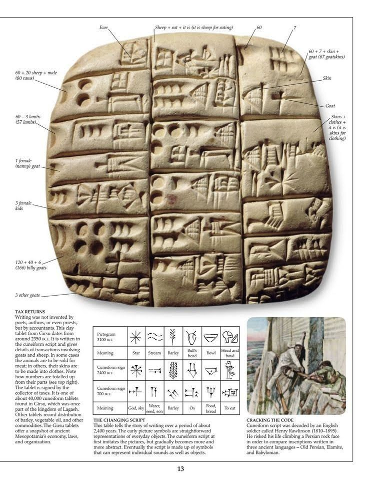
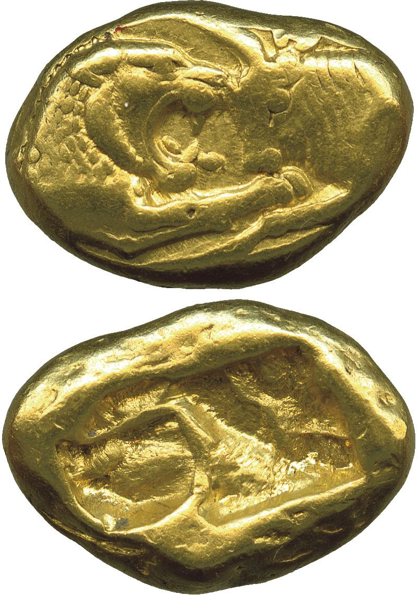
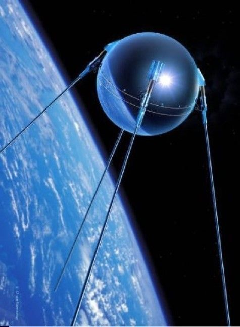
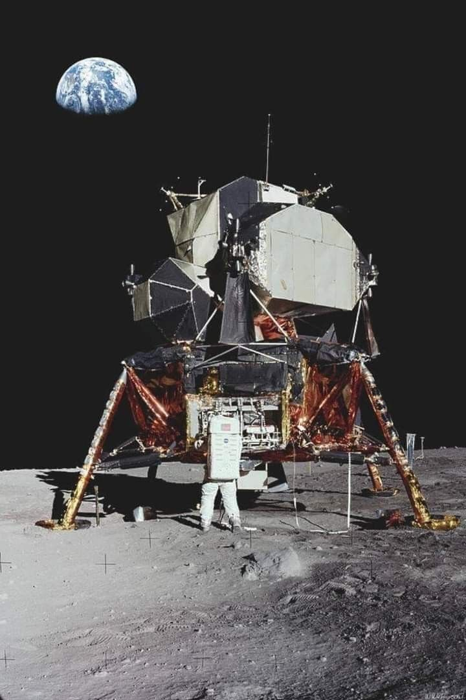

The study of Human History is often organized into major eras, each defined by transformative technological, social, and cultural developments.
These periods—Prehistoric, Ancient, Post-Classical, Early Modern, and Modern—provide a framework for understanding humanity's evolution across millions of years.
Grounded in archaeological and historical evidence, this timeline highlights key milestones while acknowledging regional variations and the limitations of Eurocentric periodization.
The following overview aims to present these eras concisely, balancing scholarly precision with accessibility.
Listed below :-
1. Prehistoric Era (c. 3.3 million years ago-c. 3300 BCE)
Parietal hands in Lascaux, Southern France.
Definition:The period before written records, spanning from the earliest hominin tool use to the advent of writing in Mesopotamia.
It's characterized by gradual technological and social advancements, studied through fossils, tools, and art.
Subdivisions and Key Developments :
Paleolithic (Old Stone Age, c. 3.3 million-10,000 BCE)
a.) Timeline and Evidence:
Earliest tools: Lomekwian stone tools (Kenya, 3.3 million years ago), attributed to early hominins (e.g., Australopithecus).
Oldowan tools (2.6 million-1.7 million years ago), found in Gona, Ethiopia, used by Homo habilis for cutting and scraping.
Acheulean handaxes (1.76 million-100,000 years ago), associated with Homo erectus, found across Africa, Europe, and Asia, indicating early migration.
Fire and Cognition: Evidence of controlled fire at Wonderwerk Cave, South Africa (c. 1 million years ago), suggests cooking, which increased caloric intake and supported brain growth.
By the Upper Paleolithic (c. 50,000-10,000 BCE), Homo sapiens developed complex behaviors: complex tools (e.g., blades, burins), cave art (e.g., Lascaux, France, c. 17,000 BCE, with 600+ paintings), symbolic objects (e.g., Venus figurines, c. 35,000 BCE), and long-distance trade (e.g., obsidian tools found 100-200 km from sources).
b.) Population Data: Estimated global population of Homo sapiens by 10,000 BCE: ~1-10 million (based on genetic studies and archaeological site density).
c.) Social Structure: Small, mobile hunter-gatherer bands (20-50 individuals), egalitarian, with evidence of trade (e.g., obsidian tools found 100+ km from source).
d.) Significance: The Paleolithic laid the foundation for human adaptability, with tool use and cultural expression marking cognitive leaps.
Mesolithic (Middle Stone Age, c. 10,000-6000 BCE)
a.) Timeline and Evidence:
Environmental Shift: The Last Glacial Maximum (c. 20,000-10,000 BCE) ended, warming climates and raising sea levels, which submerged coastal settlements (e.g., Doggerland, North Sea).
This transition forced adaptation, with microlith tools (e.g., Star Carr, England, c. 8500 BCE) for hunting smaller game and fishing.
Proto-Agriculture: The Natufian culture (Levant, c. 12,500-9500 BCE) harvested wild grains and built semi-permanent settlements (e.g., Ain Mallaha, with stone structures).
Evidence of early bread-making (Jordan, c. 14,400 BCE) predates full agriculture.
b.) Population Data: Global population likely doubled to ~5-20 million due to resource stability.
c.) Significance: The Mesolithic bridged hunter-gatherer lifestyles to sedentary societies, setting the stage for agriculture.
Neolithic (New Stone Age, c. 10,000-3300 BCE)
a.) Timeline and Evidence:
Neolithic Revolution: Independent agriculture emerged in multiple regions: Fertile Crescent (c. 10,000 BCE, wheat, barley, goats), China (c. 7000 BCE, rice, pigs), Mesoamerica (c. 6000 BCE, maize, beans), and Andes (c. 5000 BCE, potatoes, llamas).
Göbekli Tepe, Turkey (c. 9600-7000 BCE) with T-shaped pillars, suggests ritual drove early settlement, challenging the idea that agriculture preceded complex societies.
Remains of: Göbekli Tepe, Turkey.
Urbanization: Çatalhöyük, Turkey (c. 7100-5700 BCE), housed ~5,000-10,000 people in mudbrick homes, with wall paintings and shrines indicating religious practices.
Jericho (c. 9000 BCE) had stone walls and a tower, showing defensive architecture.
Technology: Polished stone tools, pottery (e.g., Jomon, Japan, c. 10,000 BCE), and weaving (e.g., linen in Egypt, c. 5000 BCE).
b.) Population Data: Global population grew to ~50 million by 3300 BCE due to agricultural surplus.
c.) Significance: The shift to agriculture transformed diets, social hierarchies (e.g., elites in Çatalhöyük), and laid the groundwork for civilizations.
* Critique: The “Prehistoric” label can downplay the complexity of societies like Göbekli Tepe. Regional timelines vary (e.g., Australia remained hunter-gatherer longer), and Eurocentric frameworks may overlook African or American developments.
2.) Ancient History (c. 3300 BCE-500 CE)
Mohenjo Daro : Indus Valley civilization.

Clay Tablets : Ancient Mesopotamian Civilization.
Definition:From the invention of writing (cuneiform, Mesopotamia, c. 3300 BCE) to the fall of the Western Roman Empire (476 CE), marked by urban civilizations, writing, and empires.
Subdivisions and Key Developments :
Bronze Age (c. 3300-1200 BCE)
a.) Timeline and Evidence:
Civilizations: Sumer (Uruk, c. 4000 BCE) developed cuneiform, with 5,000+ clay tablets (e.g., Epic of Gilgamesh, c. 2100 BCE).
Egypt's Old Kingdom (c. 2686-2181 BCE) built the Great Pyramid (c. 2630 BCE, 2.3 million limestone blocks).
Indus Valley's Harappa and Mohenjo-Daro (c. 2600-1900 BCE) had grid-planned cities and advanced drainage.
Shang Dynasty (c. 1600-1046 BCE) used oracle bones for divination (~150,000 found).
Trade and Technology: Bronze (copper-tin alloy) enabled stronger tools and weapons; wheeled vehicles (Mesopotamia, c. 3500 BCE) and seafaring (e.g., Minoan Crete, c. 2000 BCE) expanded trade (lapis lazuli from Afghanistan to Egypt).
b.) Population Data: Mesopotamia's urban centers (e.g., Ur, c. 2000 BCE) had ~50,000 residents; global population ~100 million by 1200 BCE.
c.) Significance: Writing and urbanization enabled complex administration and cultural preservation.
Extra-> Collapse of Bronze Age Civilizations (c. 1200-1100 BCE):
Details: A systemic collapse affected the Eastern Mediterranean, with Mycenaean Greece, Hittite Empire, and Egyptian New Kingdom declining.
Evidence includes destroyed cities (e.g., Ugarit, c. 1190 BCE) and reduced trade (e.g., fewer shipwrecks post-1200 BCE).
Theories include invasions (Sea Peoples, mentioned in Egyptian texts), climate change (drought evidence in tree rings), and internal revolts.
Impact: Disrupted trade networks, reduced literacy (e.g., Linear B script lost in Greece), and shifted power to smaller states (e.g., Phoenicia).
Significance: The collapse marked a transition to the Iron Age, with new technologies and political structures emerging from the chaos.
Iron Age (c. 1200-500 BCE)
a.) Timeline and Evidence:
Technology: Iron smelting (Anatolia, c. 1800 BCE) became widespread by 1200 BCE, producing stronger, cheaper tools and weapons.
Rise of Empires: Neo-Assyrian Empire (911-609 BCE) controlled ~1.4 million km², using iron weapons and siege tactics.
Zhou Dynasty (1046-256 BCE) in China introduced the “Mandate of Heaven” concept, legitimizing rule.
Cultural Advances: Phoenician alphabet (c. 1050 BCE) simplified writing; coinage (Lydia, c. 600 BCE) standardized trade.

Coin from Ancient Lydia.
b.) Population Data: Global population ~100-150 million; Assyrian capital Nineveh had ~100,000 residents.
c.) Significance: Iron democratized technology, enabling larger armies and agricultural expansion.
Classical Antiquity (c. 600 BCE-500 CE)
a.) Timeline and Evidence:
Greece and Rome: Athenian democracy (c. 508 BCE) allowed ~30,000 male citizens to vote;
Rome's Republic (509 BCE) evolved into an empire (27 BCE), with roads spanning ~400,000 km.
Asia: Han Dynasty (202 BCE-220 CE) exported silk via the Silk Road (130 BCE);
Maurya Empire (321-185 BCE) under Ashoka unified India, promoting Buddhism (edicts on 30+ pillars).
Science and Philosophy: Euclid's Elements (c. 300 BCE) formalized geometry;
Ptolemy's geocentric model (c. 150 CE) dominated astronomy.
b.) Population Data: Global population ~200-300 million by 1 CE (Roman Empire: ~50 million; Han China: ~60 million).
c.) Significance: Cultural and intellectual foundations (e.g., Greek philosophy, Roman law) shaped later eras.
* Critique: Focus on Mediterranean and Chinese civilizations often overshadows African kingdoms (e.g., Aksum, c. 100 CE) and Mesoamerican cultures (e.g., Olmec, c. 1200–400 BCE).
Writing-centric definitions exclude complex oral societies.
3.) Post-Classical Era (c. 500-1500 CE)
Definition: From the fall of the Western Roman Empire to the Renaissance, characterized by global trade networks, religious expansion, and technological diffusion.
Key Developments :
a.) Timeline and Evidence:
Islamic Golden Age (c. 750-1258 CE):
Details: Centered in the Abbasid Caliphate, with Baghdad's House of Wisdom translating Greek, Persian, and Indian texts.
Al-Khwārizmī's algebra (c. 820 CE) introduced algorithms; Ibn al-Haytham's Book of Optics (c. 1000 CE) advanced experimental science.
Trade spanned from Spain to China, with 10,000+ km of routes.
The Mongol sack of Baghdad (1258 CE) ended this peak, but knowledge spread to Europe.
China: Tang (618-907 CE) and Song (960-1279 CE) Dynasties innovated gunpowder (c. 850 CE) and movable type (c. 1040 CE).
Europe: Feudalism, Viking Age (c. 793-1066 CE), Crusades (1095-1291 CE).
Africa: Great Zimbabwe (c. 1100-1450 CE) traded gold; Mali Empire's Timbuktu had ~50,000 residents and 100+ libraries.
Americas: Maya peak (c. 250-900 CE) with astronomical observatories (e.g., El Caracol, Chichen Itza).
b.) Population Data: Global population ~400 million by 1500 CE; Black Death (1347-1351 CE) killed ~50 million people in Europe/Asia.
* Critique: Labeling Europe's Middle Ages as “Dark” ignores its intellectual continuity (e.g., Carolingian Renaissance) and thriving non-European civilizations. Regional timelines (e.g., Japan's Heian period, 794-1185 CE) don't align neatly.
4.) Early Modern Era (c. 1500-1800 CE)
Renaissance Painting: The School of Athens by Raphael.
Definition: From the Renaissance to the Industrial Revolution, marked by global exploration, intellectual revolutions, and colonial empires.
Key Developments :
a.) Timeline and Evidence:
Renaissance (c. 1300-1600 CE):
Details: Revival of classical art, literature, and science in Europe.
Gutenberg's printing press (c. 1440 CE) produced ~200 million books by 1600 CE, boosting literacy (~10-20% in Europe).
Artists like Leonardo da Vinci (e.g., Mona Lisa, c. 1503 CE) and Michelangelo (Sistine Chapel, 1508-1512 CE) redefined aesthetics.
Humanism (e.g., Petrarch) emphasized individual potential.
Impact: Spread knowledge, challenged Church authority, and inspired the Reformation (1517 CE).
Age of Exploration (c. 1492-1600 CE):
Details: European voyages—Columbus (1492), Vasco da Gama (1498), Magellan (1519-1522)—mapped the Americas, Africa, and Asia.
The Columbian Exchange transferred crops (e.g., potatoes, maize) and diseases (e.g., smallpox, killing ~80-90% of Native Americans, ~50-100 million).
Impact: Established colonial empires (Spain controlled ~12 million km² by 1600 CE) and global trade (e.g., Manila Galleons).
Impact: Shifted worldviews, enabling technological leaps; challenged religious dogma.
Enlightenment (c. 1685-1789 CE):
Details: Philosophers like Locke (natural rights), Voltaire (free speech), and Rousseau (social contract) shaped political thought.
Encyclopédie (1751-1772 CE, 28 volumes) compiled knowledge. Coffeehouses (~3,000 in London by 1700 CE) fostered debate.
Impact: Inspired revolutions (e.g., American, French) and secular governance.
b.) Population Data: Global population ~500 million by 1500 CE, ~700 million by 1800 CE; Americas’ indigenous population declined ~80–90% (50–100 million) due to disease and conquest.
c.) Key Developments: Global trade (e.g., Columbian Exchange), Protestant Reformation (1517), and rise of nation-states.
* Critique: Eurocentric focus on Renaissance and Enlightenment marginalizes the devastation of colonialism and contributions of non-Western societies (e.g., Mughal India’s economy, ~25% of global GDP in 1700 CE).
5.) Modern Era (c. 1800–present)
Definition: From the Industrial Revolution to the present, defined by rapid technological, political, and social transformations.
Urbanization: London’s population grew from 1 million (1800) to 6.7 million (1900).
b.) Impact: Global GDP per capita rose from ~$1,000 (1800) to ~$2,000 (1900, in 1990 USD).
Age of Revolutions (c. 1760–1848)
a.) Timeline and Evidence: American Revolution (1776), French Revolution (1789), Haitian Revolution (1791–1804).
b.) Impact: Spread of democratic ideals and abolition of slavery in some regions.
Honorary: World War I (28 July 1914 – 11 November 1918)
Contemporary Era (c. 1945–present)
a.) Timeline and Evidence:
World War II (1939–1945): ~70–85 million deaths (~3% of global population).
Cold War (1947–1991): Space Race (Sputnik, 1957; Apollo 11, 1969).

First artificial satellite ever launched into Earth’s orbit: Sputnik-1.

First crewed mission to land on the Moon: Apollo-11.
Information Age (c. 1980–present): Internet (ARPANET, 1969; World Wide Web, 1989), smartphones (iPhone, 2007).
AI development: Deep Blue beats Kasparov (1997), AlphaGo defeats Lee Sedol (2016).
Gary Kasparov vs. Deep Blue.
b.) Population Data: Global population: 2.5 billion (1950), 8 billion (2022).
c.) Key Developments: Decolonization (e.g., India, 1947), civil rights movements, climate change awareness (IPCC, 1988).
* Critique: The “modern” label assumes linear progress, ignoring ongoing inequalities and environmental crises. The Information Age’s start is debated (1970s vs. 1990s), and future historians may redefine this era based on AI or ecological shifts.